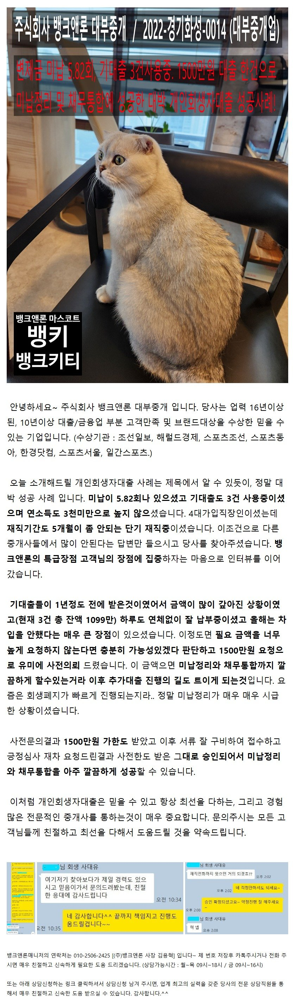
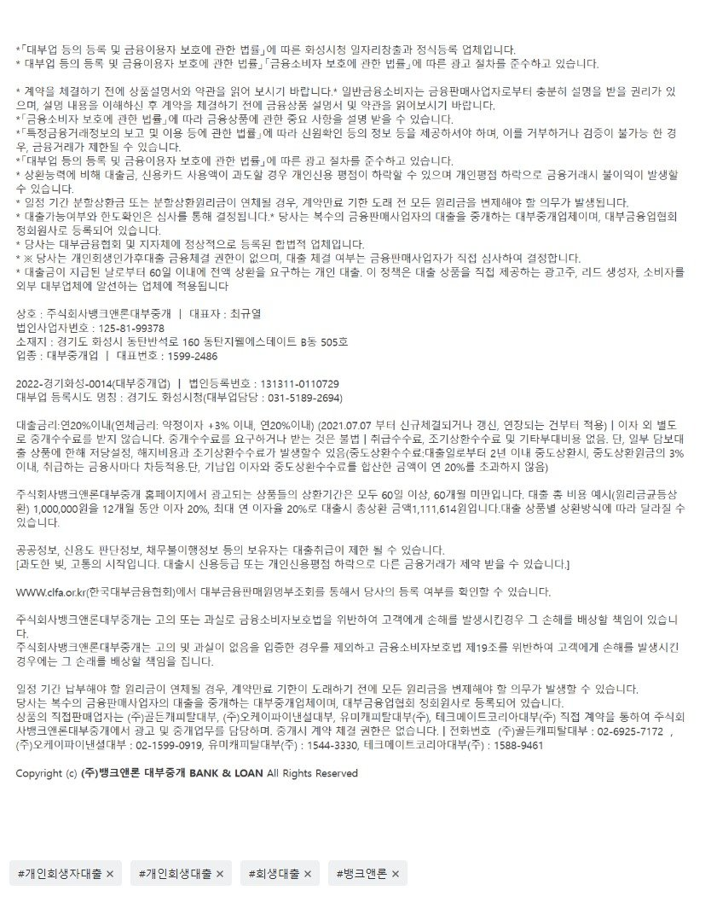

[개인회생자대출] 변제금 미납 5.82회, 기대출 3건사용중, 1500만원 한건의 대출로 미납정리 및 채무통합에 성공한 대박 개인회생자대출 사례 [필독 필독]

상담신청 -> https://cafe.naver.com/cityman88/29497
뱅크앤론의 개인회생자대출이 좋은이유[YouTube]

https://cafe.naver.com/cityman88/309522

상담신청 -> https://cafe.naver.com/cityman88/29497
뱅크앤론의 개인회생자대출이 좋은이유[YouTube]
